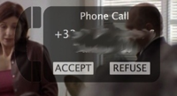
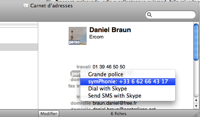

Discover symPhonie
symPhonie is an free, distributed under GNU GPLv3 licence SIP softphone. Depending on your SIP provider, you can phone, and receive phone call, from any internet acces.
symPhonie is a MacOS only application, and therefore highly integrated in your Mac environment : handling of power state or session changing, integration with adress book, use of keyring to safely store your password, etc...
Simple Configuration |
|
 |
symPhonie is intended to be simple to use and to configure : enter your user name or number, your password, and you're done. NOTE : symPhonie is currently limited to Free french provider. |
Phone calls |
|
|  |
It is easy to dial a number, call a contact, or even make a call from an URL. symPhonie is fully integrated with Address Book. symPhonie can also receive incoming calls. |
Addres Book plugin |
|
|  |
If optional Address Book plugin is installed, a menu item is added in Address Book, allowing dial with symPhonie |
Other cool stuffs |
|
|
When you make a call, or receive a call, symPhonie will pause iTunes, DVD players, etc... symPhonie will also detect network change, power status change, session change, etc... making it easy to use on your MacBook |
|
Usual disclaimer |
|
|
symPhonie is provided for free, with no warranty of any kind, etc... In short, if Apocalypse comes when you make a call, it's not my fault. |
|